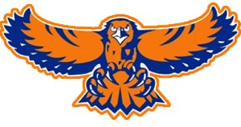
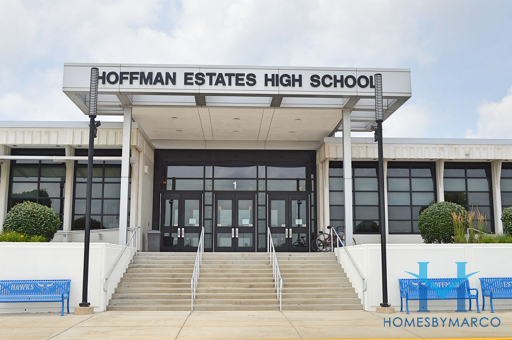

About Me!
Welcome to my interview. Please ENJOY!!
- What's your name and age?
My name is Ramin Ahmed and I am 14 years old.
- When's your birthday?
My birthday is on October 19th. I was born in the 2000s era but people don't usually include 2004 as part of that group.
I'm actually turning 15 y/o this year.
- What are your hobbies?
I don't have a specific hobby. Usually I like to read and explore alot of book. However, lately due to homework I haven't have time to read any.
I'm the kind of person who reads more than 60 pages and reads until I feel satisfied on where I end that. This creates the issue of having time management because I have other responsibilities.
- Do you any Nicknames?
Yes I do since elementary which was ramen noodles. I know a great name.

- What's you favorite show or movie?
I would say Criminal Minds. It's my favorite crime tv show in which I'll watch over and over without getting bored.

- If you were to describe your personality in three words, what would it be?
I would say kind, hardworking, and a bit of an overachiever. My friends, especially my teachers know how extra I am with assignments.
Mostly projects. I just have this high expectation of myself which causes me to look more further than others.
- What middle school did you go too?
Jane Addams. It was a great school. I loved it there! If you want to learn more about
the school you can click on the image below.

- What school do you go too?
Currently I'm in my first year as a freshman in Hoffman Estates High School.If you want to learn more about
the school you can click on the images below.

